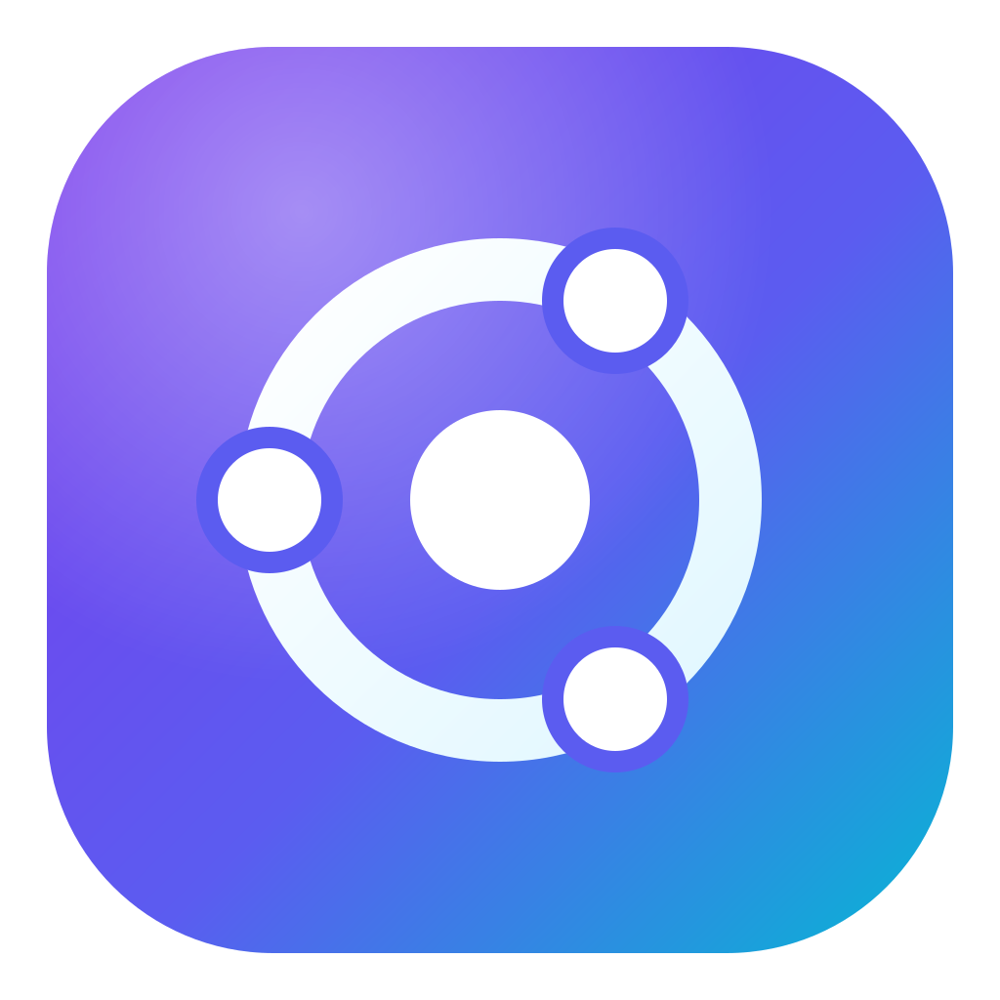
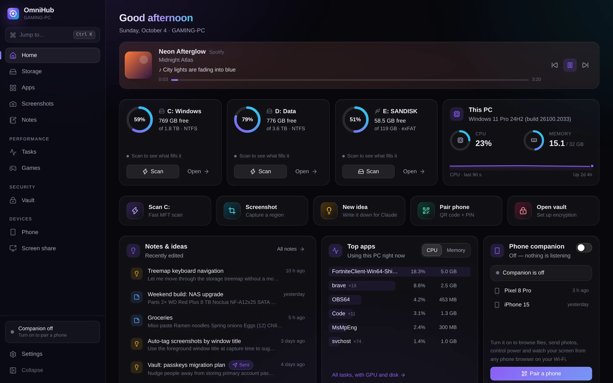
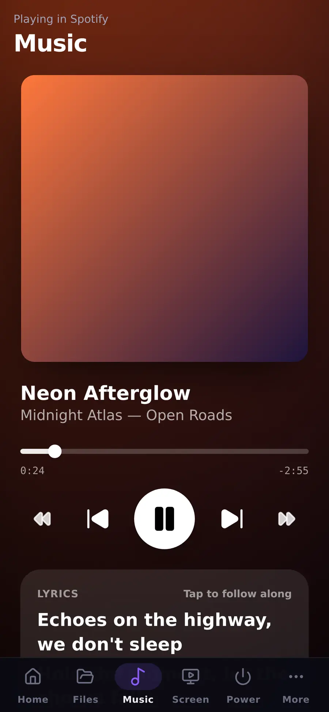
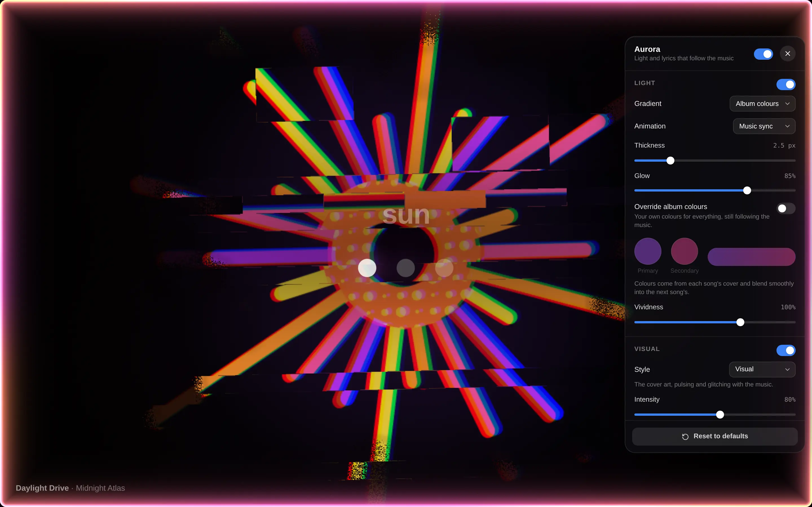
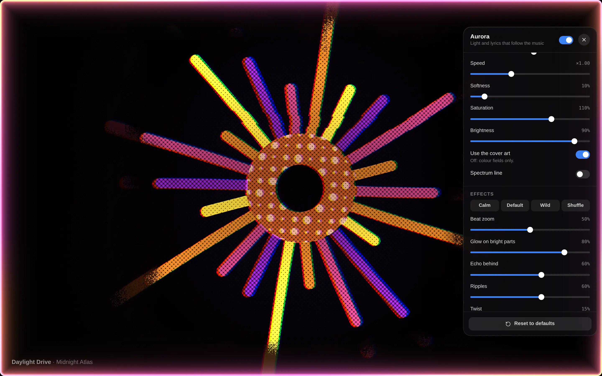
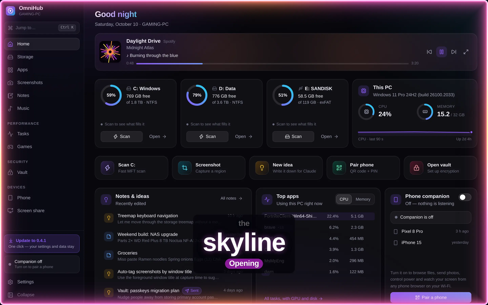
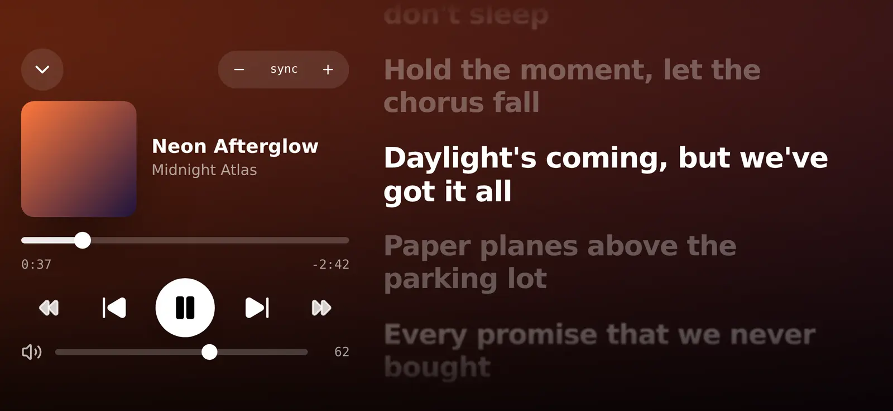
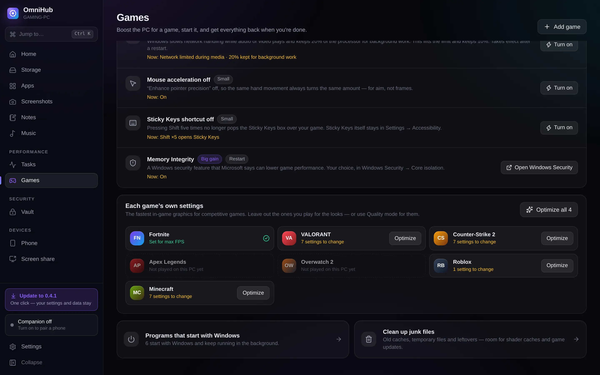

Local-first
No account and no cloud. Your files, notes and passwords never leave your PC unless you send them to your own phone.

OmniHubSee what fills your drives in seconds, boost your games, keep passwords in an encrypted vault, and run your PC from your phone — music with synced lyrics included. Local-first. No account. No cloud.


Every part of OmniHub, as it really looks. Pick a tab — or just watch.
The PC serves the phone app itself — nothing to install from a store, nothing in the cloud. Pair once with a QR code or PIN, over your own Wi-Fi, encrypted.
The cover of whatever is playing, sharp and alive on black — swelling with the bass, rippling and glowing on the beats — inside a thin neon light in the cover's own colours, with the lyrics bouncing over it one word at a time. Pick a cover and press play.
A sketch of the effect in your browser. In OmniHub it follows the real sound (Windows' loopback, never the microphone) and the song's real lyrics, word by word — exact when the lyrics time each word, estimated from the line's timing when they don't (you can turn that off).



Spotify, Apple Music, YouTube in a browser — whatever plays on the PC shows up on your phone with time-synced lyrics, lined up to the PC's own clock. Try it: tap a line.

A profile per game — Fortnite, VALORANT, CS2, Apex, Overwatch 2, Roblox, Minecraft and more, found on your PC. Competitive sets the game itself for the most frames; Quality leaves its graphics alone, so a 4K Ultra game stays 4K Ultra. Either way OmniHub clears Windows out of the way, measures every frame, and puts everything back when you quit.
No app can make your ping 0 or shorten the distance to a server — the closest region is the floor. OmniHub removes what adds lag on your side: background scans, downloads, a busy line.

No account and no cloud. Your files, notes and passwords never leave your PC unless you send them to your own phone.
Argon2id + AES-256-GCM, bound to your Windows account with DPAPI, Windows Hello unlock, clipboard that clears itself.
Off until you turn it on. Local network only, HTTPS, pairing with the PC in front of you, every action in an audit log.
Runs as a normal user. Windows asks only for fast drive scans and a few one-time settings — or approve scans once.
Updates come from this project's GitHub releases and must match their published SHA-256 before they install.
Rust and React, all on GitHub. Read the code, build it yourself, see exactly what it does.
Windows 10 or 11, 64-bit. From 0.2.1 on, OmniHub updates itself.
Yes — free and open source, with no ads, no account and no paid tier.
No. There is no OmniHub server. The only internet requests are optional: song lyrics from LRCLIB, the password breach check (only the first 5 characters of a hash), update checks on GitHub, and pings you start yourself.
The installer isn't code-signed yet, so SmartScreen hasn't seen it before. Choose More info → Run anyway. Updates after that install from inside the app.
Both. The phone app runs in the browser (Safari, Chrome…) and can be added to the home screen. iPhones can also mirror their screen to the PC with AirPlay.
It only changes Windows settings — power plan, notifications, priority, GPU choice, Wi-Fi — and never touches a game's memory or files. Roblox flags go in Roblox's own settings file.
Update to 0.2.1 or later — it fixes a Windows bug that refused phones on Wi-Fi. Then open Phone → Connection check: it tests the address from the PC and fixes the firewall in one click.